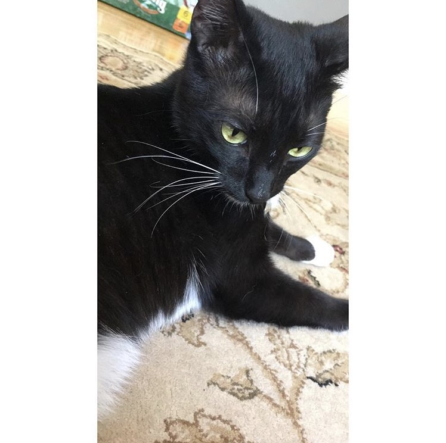
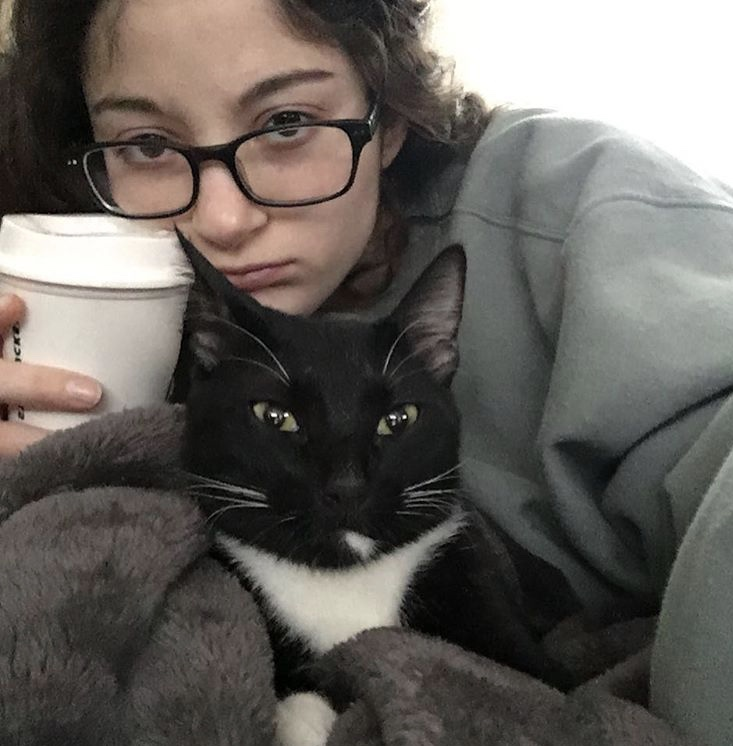

When kitty was very young he learned something different was living us, and that he would have to adjust to and get used to having around. The "something different" is actually a child ghost that lives throughout our house. Although this child doesn't show any harm or pain to us, but our kitty experiences the spirit in a different way. Since obviously cats can sense and see things like that they have little play dates where at nighttime when most of us are asleep they begin racing around the house. Something the ghost will play tricks on kitty and get him to climb up the window frames or sometimes he even runs from my room all the way upstairs in the corner to the opposite side of the house downstairs. Even though most people will read and say, "wow thats not normal" most of my friends who have witnessed it have indeed phrased it in that exact way. Yes it is strange and not normal and what ghost plays with a cat but it keeps him entertained and causes him no pain so why not let the two young kids have some fun around the house once and a while.
 